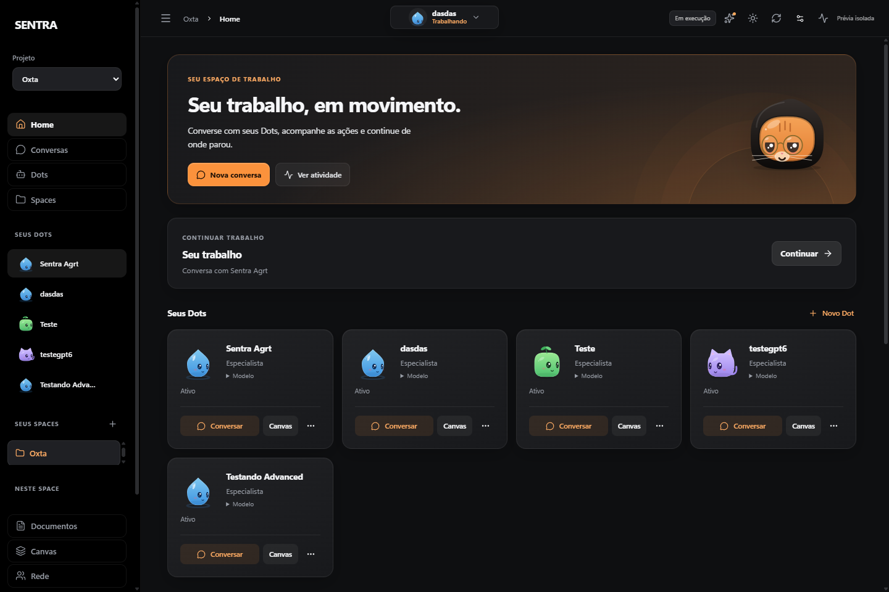
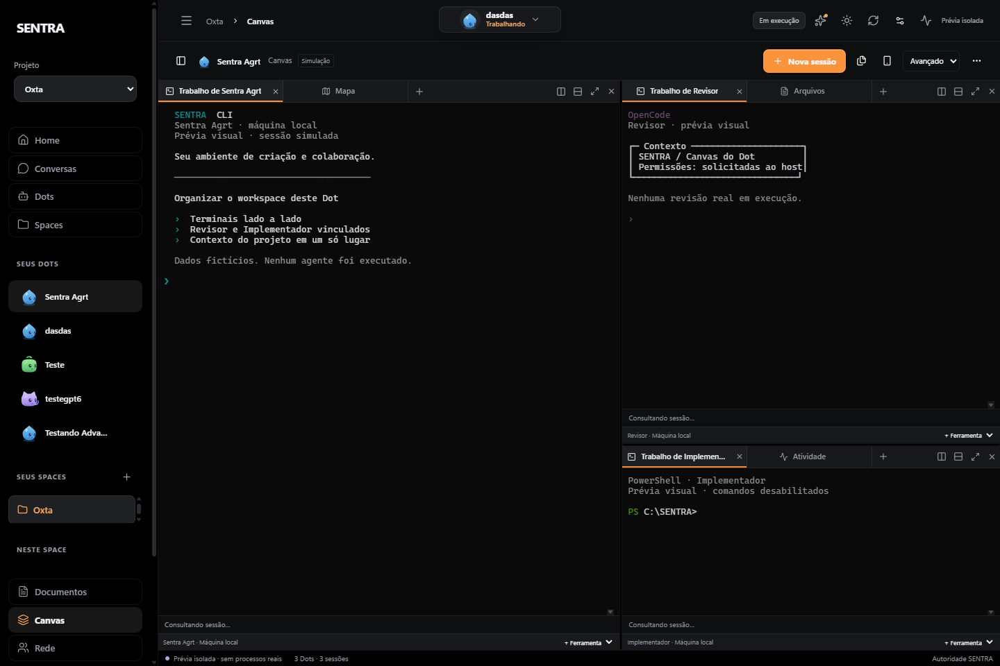
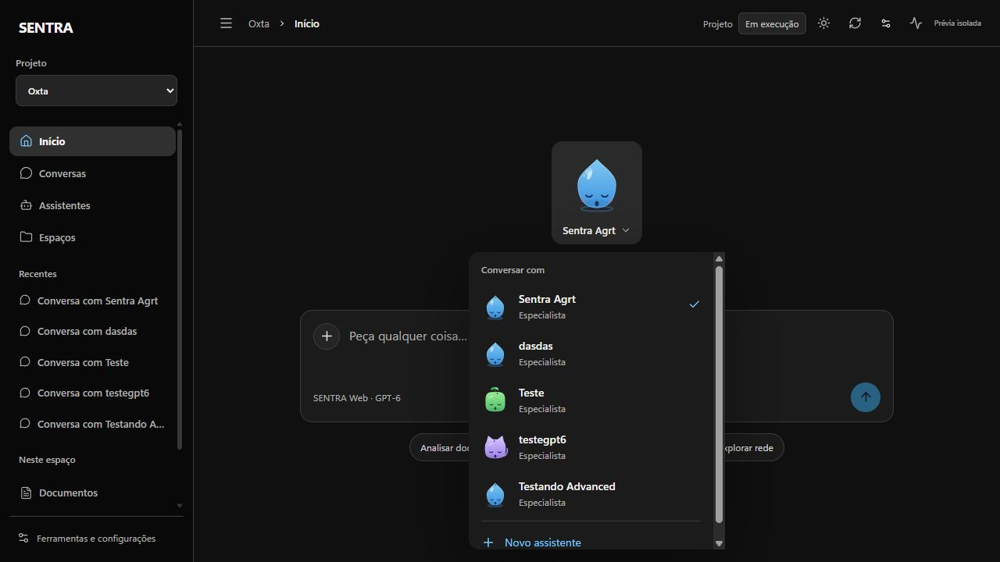

Your Dot, your context
Conversations and Spaces organized by project. Pick up your work without searching through terminals and settings.
Give your Dots a direction. Talk through ideas, follow your agents, and continue your work between your computer and phone.
In development · Preview releases

Application previews refreshed on October 24, 2026, with isolated demonstration data. Screenshots show the current Portuguese interface. The Windows 1.0.2 preview includes this interface; preview qualification remains incomplete.
Start with a conversation. Open the details when you need them.
Conversations and Spaces organized by project. Pick up your work without searching through terminals and settings.
Terminals, files, and activity in tabs and split panels. Expand your workspace as the task calls for it.
Access requests and clear task states help you see what is happening and what needs your attention.

Click your central Dot to choose an assistant by name and image, or create a new one. The selected Dot follows your conversation entry, while your draft stays in place.
Explore the SENTRA workspace
The mobile app connects you to your SENTRA host. Use your local network or a private VPN between your devices, without a public relay.
In Canvas, open Devices (Dispositivos), enable the LAN / VPN connection, and display the temporary QR code.
Install the available preview, join the same Wi-Fi network or private VPN, and scan the QR code. For a VPN, select the desktop network address your phone can reach.
Review and approve the pairing request. Each device has its own identity and can be revoked.
Pairing and network troubleshooting guide ↗
These builds still require qualification on physical Android and iPhone devices. An available download does not mean that qualification is complete. A VPN connection requires devices to reach the host's private address directly. VPN configuration is managed through your own network.
Published downloads link to their release notes and verification files.
The APK will appear here when a preview build is published.
Download APK Release, signing details, and SHA-256 ↗Access will be provided through TestFlight or signed Apple distribution. No installable iPhone app has been published yet.
Open TestFlight ↗Follow releases ↗Unsigned Windows 1.0.4 preview with integrated account-connection and native LAN corrections. Isolated install, repair and a real model response passed; clean Windows qualification remains open.
Windows preview and downloads ↗Manifest and SHA-256 ↗Download every installer part listed in the release and follow its verified reassembly instructions.
Current preview acceptance and known limitations ↗
Loading download availability…
This is the project's introduction and download page. Access your Dots and conversations in the app connected to your host.
Connections are direct over LAN or a private VPN. SENTRA does not require a public relay. Your devices must be able to reach the host address; a VPN does not replace pairing or device permissions.
An Apple Developer account and iOS distribution channel have not been set up yet. The iPhone download will be enabled when a signed release is available.
Read the README, credits, and instructions in the SENTRA repository. Include your version and reproduction steps when reporting an issue.